南極・マックロバートソンランド
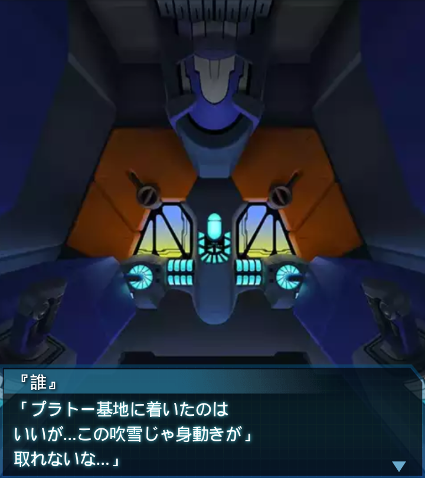
『誰』
「プラトー基地に着いたのは
いいが…この吹雪じゃ身動きが」
取れないな…」
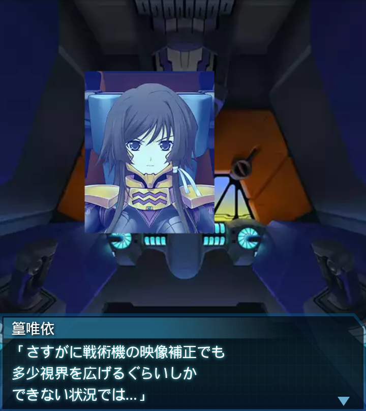
篁唯依
「さすがに戦術機の映像補正でも
多少視界を広げるぐらいしか
できない状況では…」
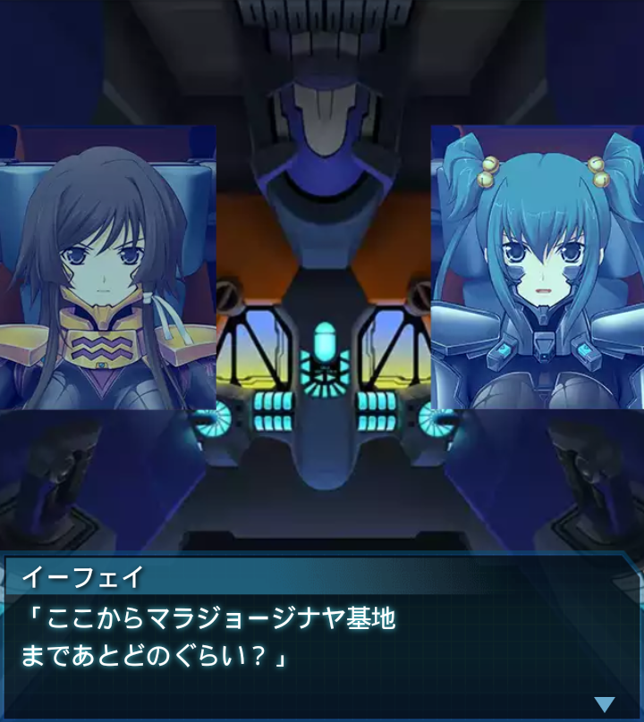
イーフェイ
「ここからマラジョージナヤ基地
まであとどのぐらい？」
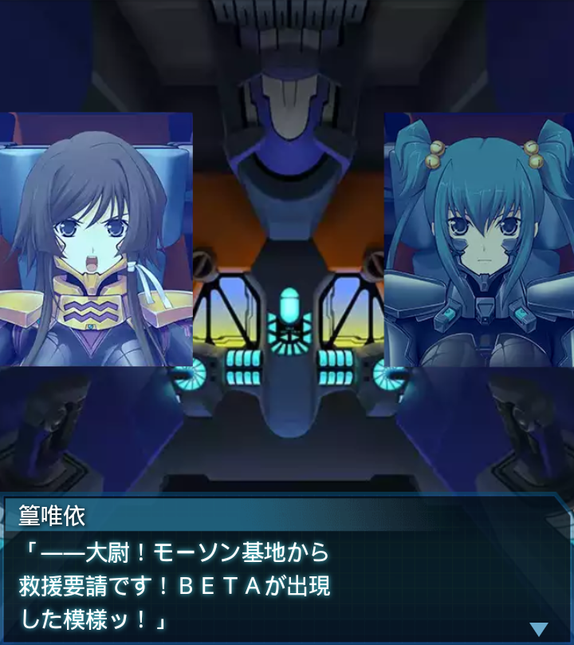
篁唯依
「――大尉！モーソン基地から
救援要請です！ＢＥＴＡが出現
した模様ッ！」
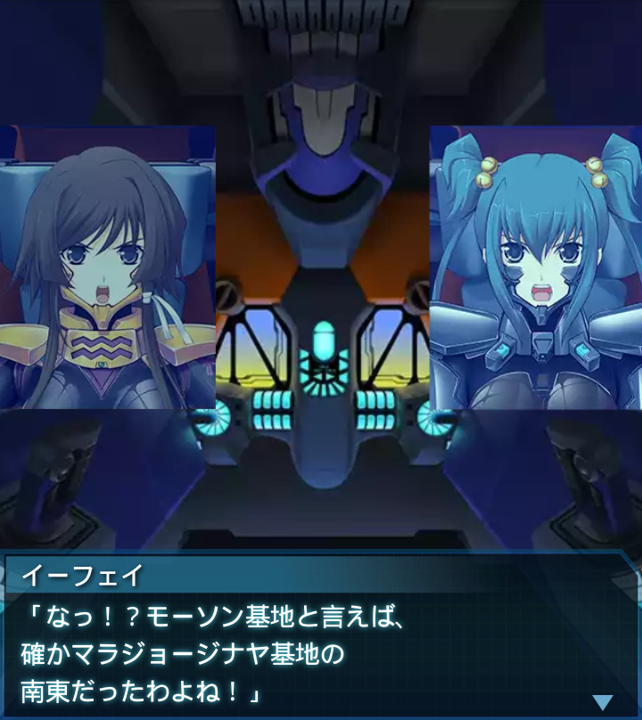
イーフェイ
「なっ！？モーソン基地と言えば、
確かマラジョージナヤ基地の
南東だったわよね！」
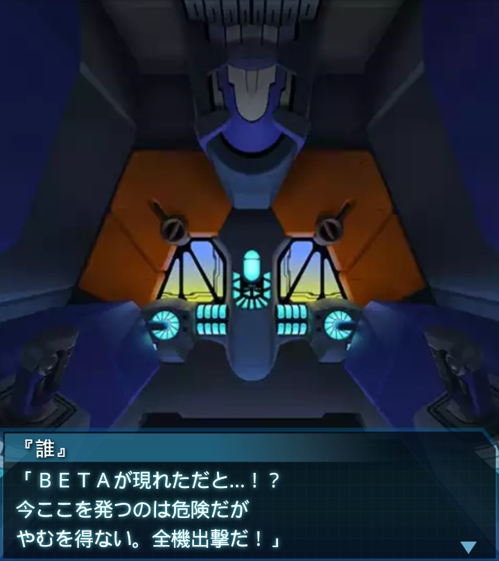
『誰』
「ＢＥＴＡが現れただと…！？
今ここを発つのは危険だが
やむを得ない。全機出撃だ！」
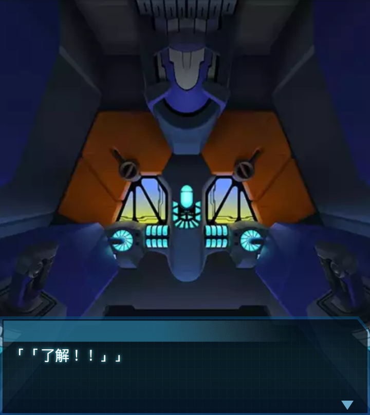
「「了解！！」」
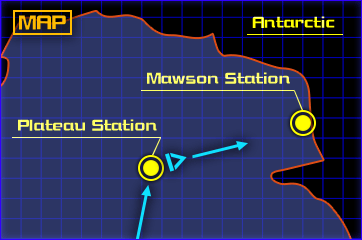
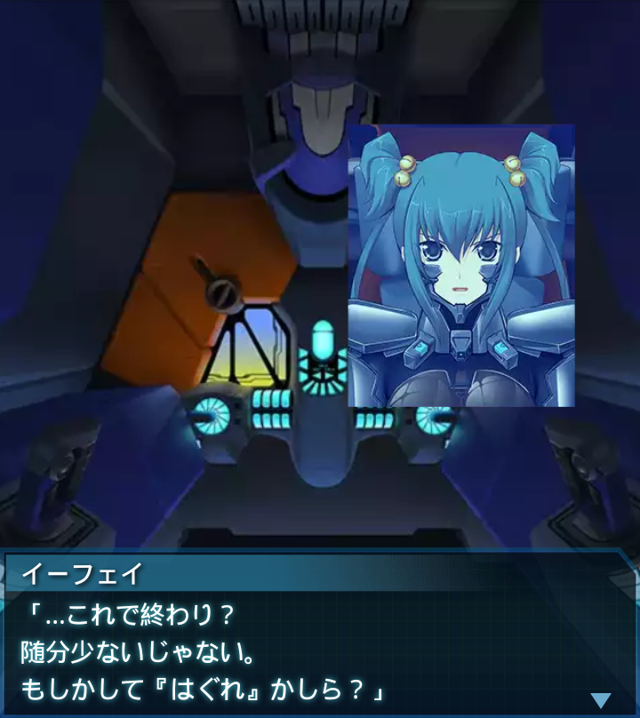
イーフェイ
「…これで終わり？
随分少ないじゃない。
もしかして『はぐれ』かしら？」
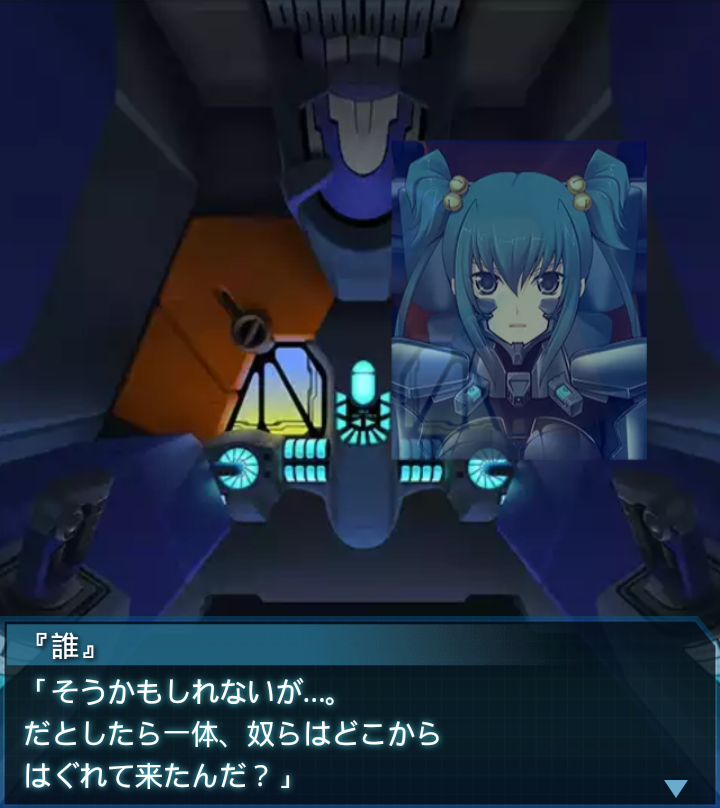
『誰』
「そうかもしれないが…。
だとしたら一体、奴らはどこから
はぐれて来たんだ？」
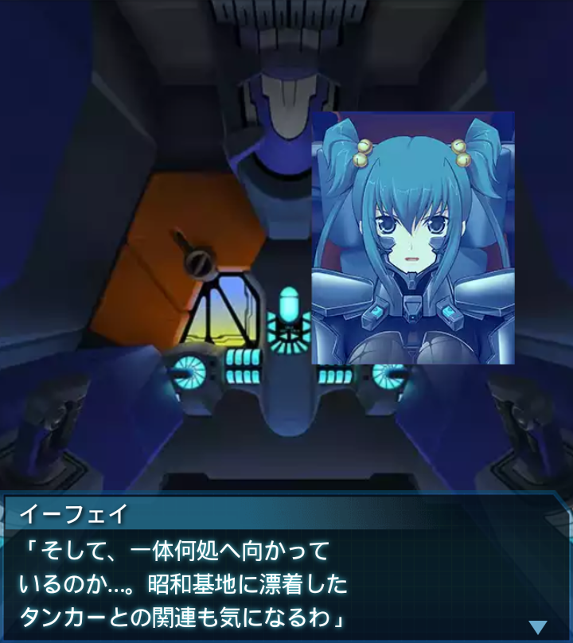
イーフェイ
「そして、一体何処へ向かって
いるのか…。昭和基地に漂着した
タンカーとの関連も気になるわ」
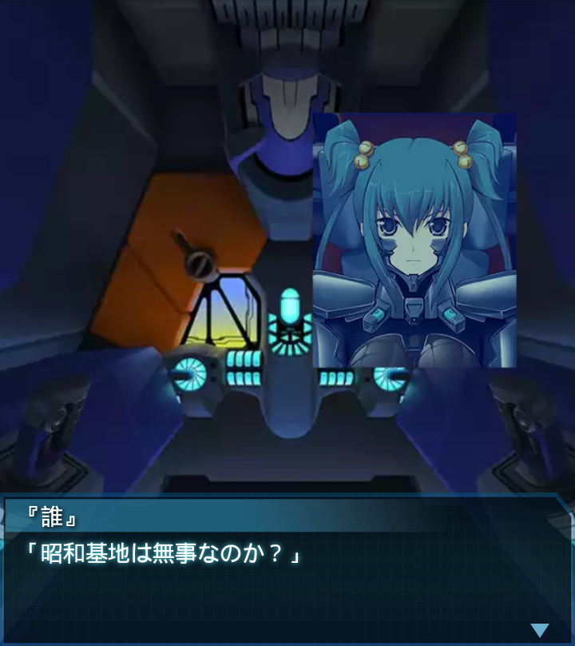
『誰』
「昭和基地は無事なのか？」
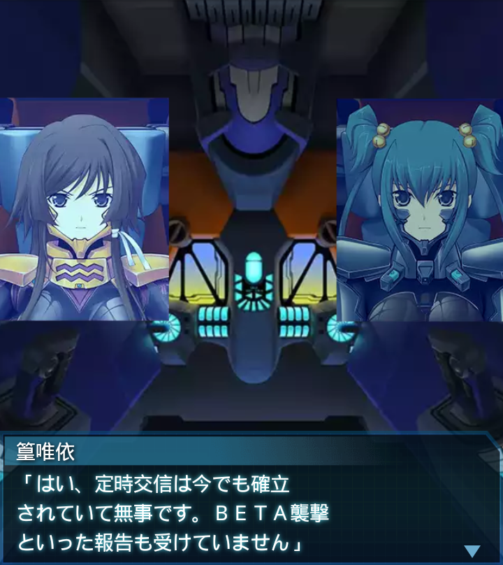
篁唯依
「はい、定時交信は今でも確立
されていて無事です。ＢＥＴＡ襲撃
といった報告も受けていません」
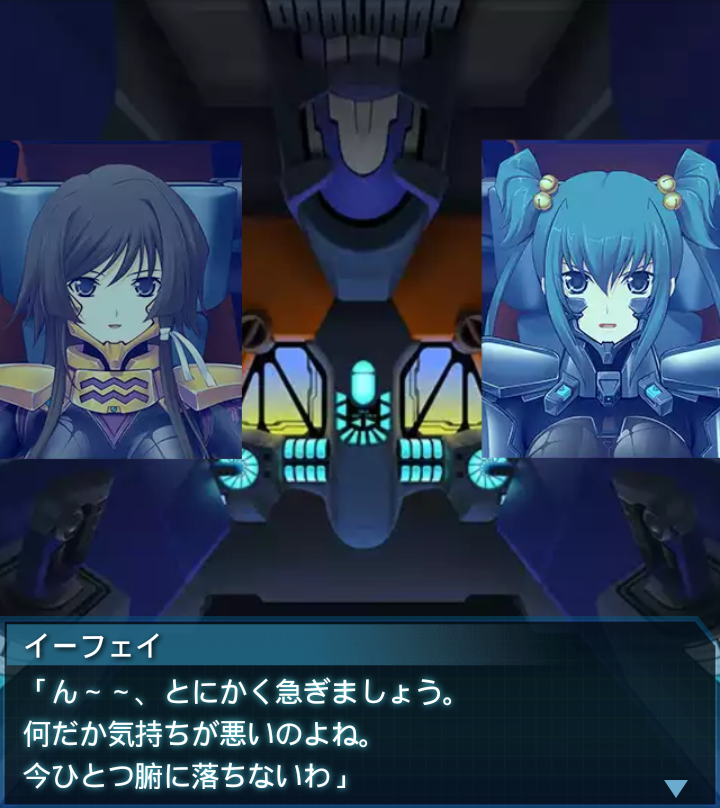
イーフェイ
「ん～～、とにかく急ぎましょう。
何だか気持ちが悪いのよね。
今ひとつ腑に落ちないわ」
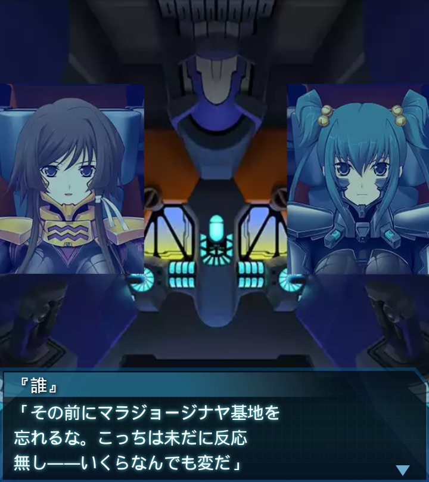
『誰』
「その前にマラジョージナヤ基地を
忘れるな。こっちは未だに反応
無し――いくらなんでも変だ」
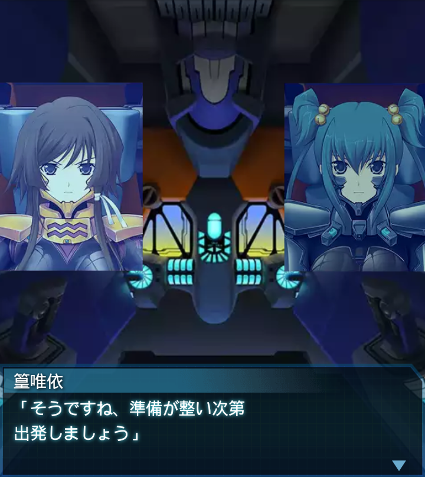
篁唯依
「そうですね、準備が整い次第
出発しましょう」
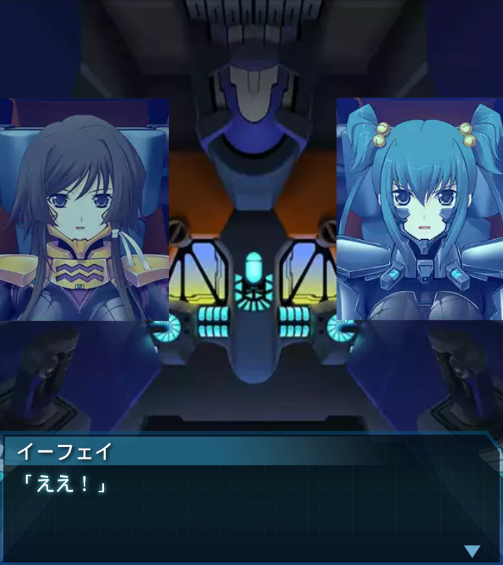
イーフェイ
「ええ！」